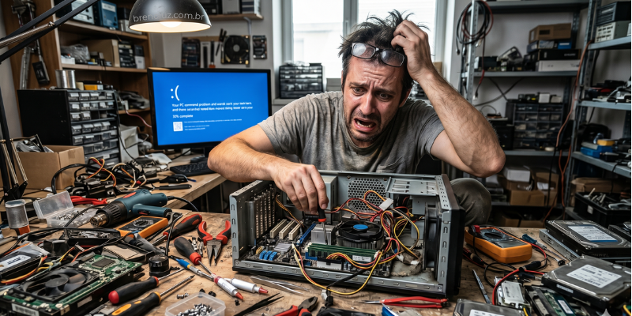
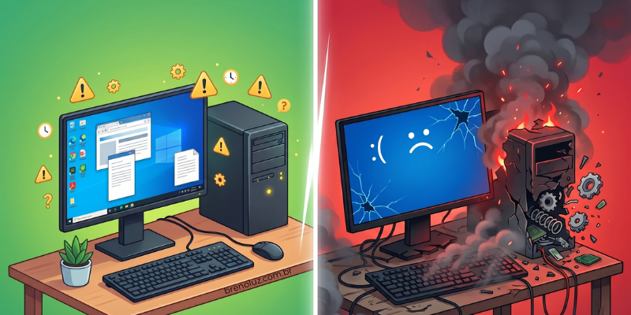
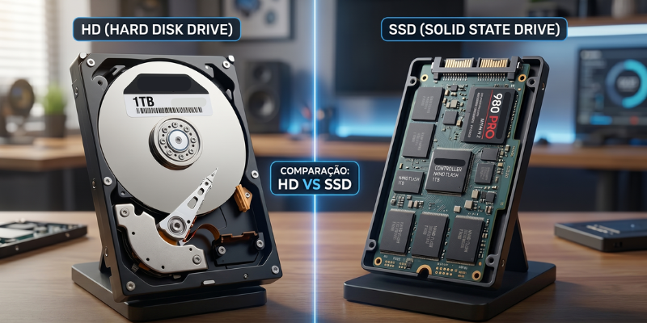

A manutenção de computadores ainda é cercada por informações erradas que acabam prejudicando o desempenho e a vida útil do equipamento. Muitos usuários acreditam em soluções rápidas divulgadas na internet, mas que, na prática, não resolvem o problema.

Um dos principais motivos para a lentidão do Windows não está no hardware, mas nos programas instalados e em como eles se comportam no sistema. Com o tempo, isso afeta diretamente o desempenho do computador.

Quando o disco do computador fica constantemente em 100% de uso, o sistema começa a apresentar lentidão, travamentos e respostas muito demoradas aos comandos do usuário. Esse problema é comum no Windows e costuma gerar a sensação de que o computador está “congelando”.

Com a grande quantidade de tutoriais disponíveis na internet, muitas pessoas tentam resolver problemas no computador por conta própria. Embora alguns conteúdos realmente ajudem, fazer alterações no sistema . . .

Na internet é muito comum encontrar programas que prometem melhorar o desempenho do computador com apenas um clique. Esses softwares costumam afirmar que conseguem acelerar o sistema, corrigir erros e eliminar arquivos inúteis automaticamente.

Quando um computador começa a apresentar falhas, é comum que o usuário fique em dúvida sobre a gravidade do problema. Nem sempre um erro significa algo sério, mas em alguns casos os sinais indicam que o equipamento precisa de manutenção.

Quando se fala em melhorar o desempenho de um computador, uma das primeiras recomendações costuma ser a troca do dispositivo de armazenamento. Nesse momento surge uma dúvida comum: escolher um HD tradicional ou investir em um SSD. Embora ambos tenham a mesma função de armazenar arquivos e o sistema operacional..